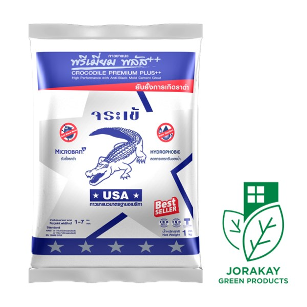
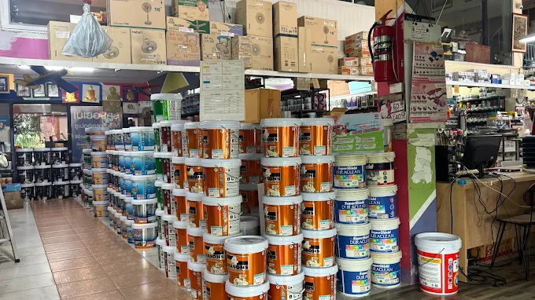
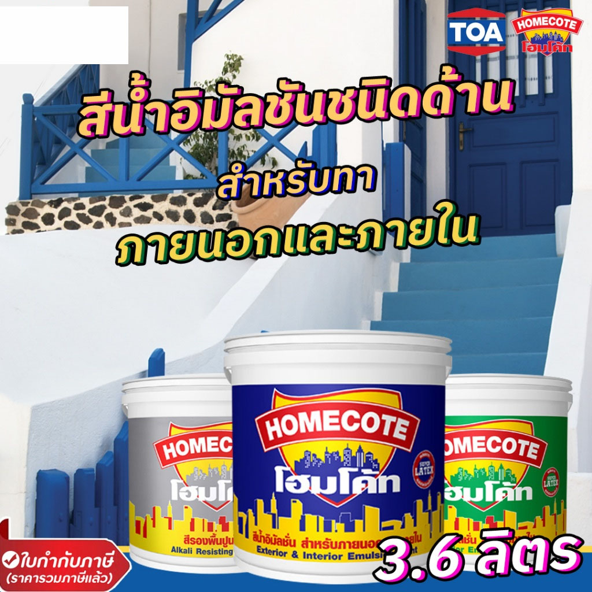
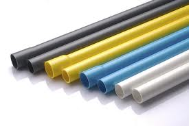
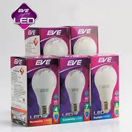
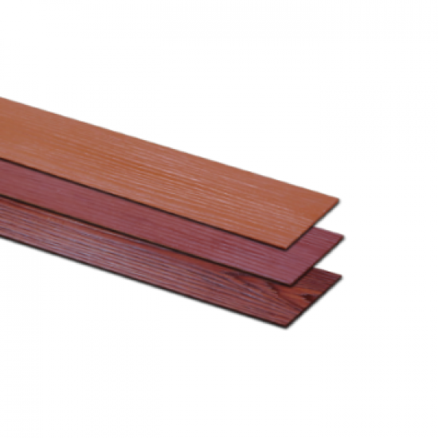
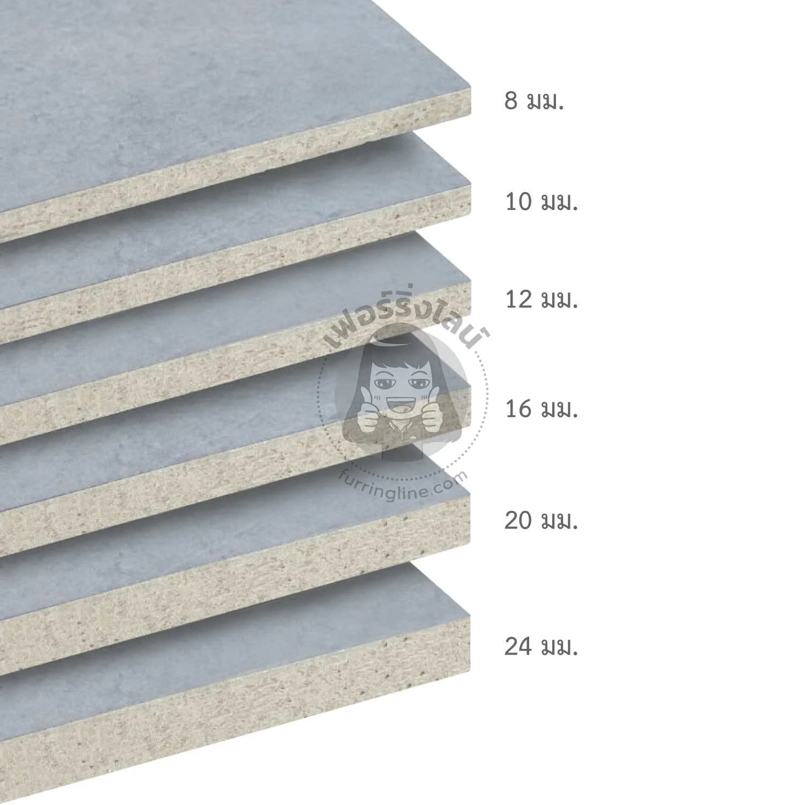

MKC
PRODUCTS
วัสดุก่อสร้าง โครงสร้างเหล็ก สีทาบ้าน และแผ่นบอร์ดตัวแทนจำหน่ายตรง
🧱 ปูนซีเมนต์และกาวซีเมนต์ (Cement & Adhesive)

ปูน TPI (ทีพีไอ)
ถุงเขียว (TPI 199): ปูนผสมสำเร็จสำหรับงานก่อ-ฉาบละเอียด เนื้อเนียนลื่น เหนียวเกาะผนังดี ไม่แตกร้าว
ถุงแดง (TPI 299): ปูนปอร์ตแลนด์ประเภท 1 สำหรับงานโครงสร้าง เสา คาน และงานหล่อคอนกรีตที่ต้องการกำลังอัดสูง

ปูนเสือ (Tiger Cement)
ปูนซีเมนต์ผสมยอดนิยมสำหรับงานก่ออิฐ ฉาบผนัง และเทปรับพื้นสูตรพิเศษ ตัวเนื้อปูนอุ้มน้ำได้ดี ลดปัญหาการซึมและแห้งตัวเร็วเกินไป ทนสภาพอากาศเมืองร้อน

ปูนลูกดิ่ง (Quick Coat)
ถุงแดง: ปูนฉาบอิฐมวลเบาโดยเฉพาะ ยึดเกาะแน่น
ถุงม่วง: ปูนก่ออิฐมวลเบา 2in1 สมานสนิทแห้งไว
ถุงเหลือง: สกิมโค้ท (Skim Coat) ปูนฉาบแต่งผิวบางพิเศษแก้งานผนังเป็นคลื่น
.jpg)
กาวซีเมนต์จระเข้ (Crocodile Tile Adhesive)
กาวซีเมนต์สำหรับปูกระเบื้องแกรนิตโต้ กระเบื้องเซรามิกขนาดใหญ่ และปูสระว่ายน้ำ แรงยึดเกาะสูง ปรับแต่งแนวร่องกระเบื้องได้ง่าย แห้งตัวสม่ำเสมอ ป้องกันกระเบื้องหลุดล่อนหรือระเบิด

กาวยาแนวจระเข้ (Tile Grout)
ยาแนวร่องกระเบื้องสูตรกันน้ำซึมลึก ไม่หดตัว ไม่หลุดล่อน ผสมสารไมโครแบน (Microban) ยับยั้งการเกิดเชื้อราดำ แบคทีเรีย และตะไคร่น้ำ เหมาะสำหรับห้องน้ำและห้องครัว
🏗️ เหล็กโครงสร้างและเหล็กรูปพรรณ (Structural Steel)

เหล็กกล่องเหลี่ยม / แป๊บโปร่ง (Steel Box)
เหล็กรูปพรรณหน้าตัดสี่เหลี่ยมจัตุรัส ผิวเรียบ มุมฉากคม ความหนาเต็ม มิลลิเมตร เหมาะสำหรับงานโครงหลังคา งานทำแป และงานเหล็กตกแต่งอาคารทั่วไป
.jpg)
เหล็กกล่องแบน / แป๊บแบน (Rectangular Steel)
เหล็กหน้าตัดสี่เหลี่ยมผืนผ้า นิยมใช้ในงานโครงสร้างเบา เช่น โครงสร้างเฟอร์นิเจอร์ งานทำรั้ว ราวบันได และงานต่อเติมทั่วไป ดัดโค้งตัดแต่งง่าย

เหล็กฉากชุบกัลวาไนซ์ (Angle Steel HDG)
เหล็กฉากโครงสร้างทำมุม 90 องศา ผ่านการชุบสังกะสีแบบจุ่มร้อน (Hot-Dip Galvanized) ป้องกันการเกิดสนิมได้อย่างสมบูรณ์แบบ ทนแดด ทนฝน และไอเค็มทะเล
.jpg)
เหล็กแบน / เหล็กพับ (Flat Bars)
เหล็กแผ่นรีดแบนยาว เนื้อเหนียวแน่น เหมาะสำหรับงานเชื่อมยึดเหล็ก งานตัดพับเชื่อมโครงสร้างรองรับรางน้ำฝน งานเหล็กดัดหน้าต่างกันขโมย และงานฝาตะแกรง
.jpg)
เหล็กข้ออ้อย (Deformed Bars)
เหล็กเส้นกลมผิวมีบั้งงอสำหรับใช้ในงานเสริมแรงคอนกรีต ช่วยเพิ่มแรงยึดเกาะระหว่างเนื้อเหล็กและเนื้อคอนกรีต เหมาะสำหรับโครงสร้างใหญ่ เช่น เสา คาน และพื้นตึก
🎨 สีทาอาคารและสีเคมีภัณฑ์ (Paints & Coatings)

สี TOA (ทีโอเอ)
สีน้ำอะคริลิกเกรดพรีเมียม (4 Seasons / Shield 1) สำหรับทาภายนอกและภายในอาคาร ฟิล์มสียึดเกาะแน่น ไม่ลอกล่อน กันเชื้อรา ตะไคร่น้ำ และเช็ดล้างทำความสะอาดง่าย

สีสเปรย์ KOBE (โกเบ)
สีสเปรย์อเนกประสงค์ แห้งเร็ว ฟิล์มสีมีความเงางามสูง ยึดเกาะได้ดีกับทุกพื้นผิว เช่น ไม้ เหล็ก พลาสติก และคอนกรีต เหมาะสำหรับงานพ่นซ่อมแซมและงานตกแต่ง DIY

สีเบเยอร์คูล (Beger Cool)
สีน้ำทาอาคารนวัตกรรมบ้านเย็น ผสมสารไมโครสเฟียร์เซรามิกทำหน้าที่เป็นฉนวนสะท้อนความร้อน ช่วยลดอุณหภูมิภายในตัวบ้าน ประหยัดค่าไฟและทนต่อสภาพอากาศแปรปรวน

สีโฮมโค้ท (Homecote by TOA)
สีน้ำอะคริลิกราคาประหยัดคุ้มค่า ให้เนื้อสีแน่น ทาได้พื้นที่มาก กลบมิดพื้นผิวผนังปูนได้ดี เหมาะสำหรับงานทารองพื้น งานบ้านเช่า หรือโครงการที่ต้องการควบคุมต้นทุน

สีเคลือบเงา SEFCO (เซฟโก้)
สีน้ำมันเคลือบเงาคุณภาพสูงและสีรองพื้นกันสนิม ให้ฟิล์มสีหนาเรียบเนียนดุจกระจก ปกป้องพื้นผิวเหล็กและโครงไม้จากความชื้นและการเกิดสนิมได้อย่างยาวนาน
⚡ อุปกรณ์ไฟฟ้า ประปา และสุขภัณฑ์ (Electric, Pipes & Bathroom)

ท่อ PVC และท่อระบบน้ำ (Pipes)
สีฟ้า: ท่อประปารองรับแรงดันน้ำสูง (ชั้น 8.5 และ 13.5) สำหรับระบบน้ำดีในบ้าน
สีเหลือง/ขาว: สำหรับร้อยสายไฟและสายโทรศัพท์ ปลอดภัย ไม่ลามไฟ
สีเทา: สำหรับระบบระบายน้ำทิ้ง สิ่งปฏิกูล และระบายอากาศ

สายไฟมาตรฐาน (Electrical Wires)
VAF (สายขาวแบน): สำหรับเดินลอยเกาะผนังภายในอาคารทั่วไป แกนคู่ทองแดงเต็มมิล
VCT (สายกลมดำ): สายไฟฉนวนหนาสองชั้น มีความยืดหยุ่นสูง ใช้ภายนอกอาคารได้ดี
THW (สายแกนเดี่ยว): สำหรับงานเดินร้อยท่อเหล็กหรือท่อ PVC ในระบบตู้คอนโทรล

หลอดไฟ EVE (อีฟ ไลท์ติ้ง)
หลอดไฟประหยัดพลังงาน LED คุณภาพสูง มีให้เลือกทั้งแบบทรงกลม (Bulb) และแบบหลอดยาว (Tube) ให้ค่าความสว่างสูงแต่กินไฟน้อย ไม่แผ่รังสีความร้อน เปิดติดทันทีแสงไม่กระพริบ

หลอดไฟ Philips (ฟิลิปส์)
แบรนด์หลอดไฟระดับโลกพร้อมเทคโนโลยีถนอมสายตา (EyeComfort) แสงสว่างนิ่งนุ่มนวล กระจายทั่วถึงอย่างสม่ำเสมอ ช่วยลดความอ่อนล้าของดวงตา มีให้เลือกหลากเฉดสี (Daylight / Warm White)

อุปกรณ์สุขภัณฑ์ Amazon (อเมซอน)
ชุดอุปกรณ์ห้องน้ำ สายฉีดชำระ หัวฝักบัว และก๊อกน้ำคุณภาพสูง ผลิตจากวัสดุแกนทองเหลืองและสแตนเลสชุบโครเมียมหนาพิเศษ ผิวเงางาม ทนทานต่อการกัดกร่อนจากน้ำยาห้องน้ำ กลไกเปิด-ปิดนุ่มนวล
🪵 แผ่นบอร์ดและไม้สังเคราะห์ (Boards & Wood Panels)

ไม้อัดเคลือบฟิล์ม / ไม้อัดโครงสร้าง (Plywood)
ไม้อัดสำหรับงานเฟอร์นิเจอร์บิวต์อิน และไม้อัดเคลือบฟิล์มดำสำหรับเป็นแบบเทคอนกรีต อัดด้วยกาวกันน้ำ ทนทานต่อการใช้งานซ้ำหลายครั้ง ไม่บวมแยกชั้น

ไม้ฝา / ไม้ระแนง ไฟเบอร์ซีเมนต์ (ตราเพชร)
ไม้สังเคราะห์ผลิตจากปูนซีเมนต์ปอร์ตแลนด์ผสมเส้นใยเซลลูโลส ปลอดภัยจากปลวกและมอด 100% ไม่บิดงอ ไม่หดตัว ทนน้ำทนชื้นสูง เหมาะสำหรับงานฝาผนังและงานระแนงระบายอากาศ

วีว่าบอร์ด (Viva Board)
แผ่นซีเมนต์บอร์ดสลับชิ้นไม้ ผสมผสานความยืดหยุ่นของไม้และความแข็งแกร่งของปูนซีเมนต์เข้าด้วยกัน ใช้ทำผนังห้องกั้นเสียง ผนังภายนอกอาคาร หรือแผ่นปูรองพื้นรับน้ำหนัก

สมาร์ทบอร์ด (Smart Board)
แผ่นไฟเบอร์ซีเมนต์บอร์ดโครงสร้างเหนียวพิเศษ ปราศจากแร่ใยหิน ดัดโค้งได้ง่าย กันน้ำ กันความชื้น ทนต่อปลวกเจาะกิน เหมาะสำหรับงานผนังเบาทั้งภายในและภายนอก

แผ่นยิปซั่มบอร์ด (Gypsum Board)
แผ่นฝ้าเพดานและผนังภายใน เนื้อยิปซั่มบริสุทธิ์หุ้มด้วยกระดาษเหนียวพิเศษ น้ำหนักเบา ติดตั้งและตัดแต่งรูปทรงได้ง่าย ผิวหน้าเรียบเนียนสนิท กันความร้อนและกันไฟลาม
🛠️ อุปกรณ์ฮาร์ดแวร์และเครื่องมือช่าง (Hardware & Tools)

เครื่องมือช่างและกุญแจ SOLO (โซโล)
กุญแจคล้อง แม่กุญแจเหล็กกล้า คีม ไขควง และเครื่องมือช่างมาตรฐานสากล ระบบกลไกล็อกหนาแน่นแบบ Double Lock ป้องกันการตัด เลื่อย หรือการงัดแงะโจรกรรมได้อย่างดีเยี่ยม